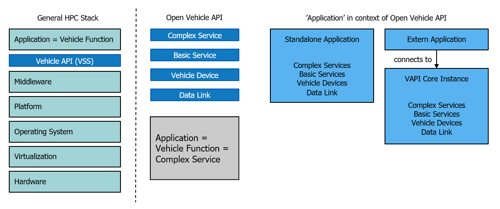

Examples of Open Vehicle API#
Before starting with the examples we have to explain the wording.
Open Vehicle API is an application development framework above the middleware. In general context Vehicle Function is often named as application or the other way around.

In context of Open Vehicle API it is different: the Vehicle Function will be implemented as Complex Service . In context of Open Vehicle API an application is either an Standalone Application or an Extern Application. A Standalone Application contains all VAPI Component s while an Extern Application connects itself to a running Open Vehicle API instance.
A Complex Service is meant to run in it own process and is supposed to connect to Basic Service s and other Complex Service s. A Complex Service should not use interface s of Vehicle Device s. This will be avoided when we do not create Proxy and Stub code for the Vehicle Device interface.
Hint
General layout of a standalone application:
sdv::app::CAppControl appcontrol;
appcontrol.AddModuleSearchDir(<path_to_component_binaries>);
appcontrol.Startup("");
appcontrol.SetConfigMode();
appcontrol.AddConfigSearchDir(<path_to_configuration_files>);
appcontrol->LoadConfig(<load_data_dispatch_service>);
appcontrol->LoadConfig(<load_tasktimer_service>);
- register your signals or load a data link component (which will register signals)
appcontrol->LoadConfig(<load_your_components>);
appcontrol.SetRunningMode();
... run your application
- unregister signals in case no data link component was used
appcontrol.Shutdown();
Important
First, the configuration mode must be set. After that, the software modules can be loaded and configured. After setting the running mode no further modules can be loaded. A CAN component, for example, establishes its connections to the sockets and starts its Read/Write thread in configuration mode, but it does not yet read or write any CAN messages. Only after the running mode is set it should read and send messages
Basic Examples#
The VAPI Framework contains several different types of examples.
Basic examples: First it is recommended to have a closer look at the basic examples to understand the basics of a SDV component and the principles of the framework.
Important
All examples are based on the helper utilities sdv_dbc_util and sdv_vss_util, which are used to automatically generate the majority of the code. The actual vehicle-specific functions constitute only a minor portion of the examples. Signal definitions are provided in a DBC file, while the interfaces are specified in a concise .csv file.
Headlight Example#
Headlight example: This example shows the following Vehicle Function : If the vehicle is in a tunnel, the headlights are turned on. Outside of the tunnel the lights are switched off. It is a perfect example to simulate the vehicle and to visualize the Vehicle Function by the source software OpenXilEnv and Carla .
Vehicle Abstraction Example#
Vehicle Abstraction example: The implementation of a Vehicle Function must be independent from the underlying vehicle. This is achieved through a Vehicle Device. Each vehicle has it’s own Vehicle Device so that the same Vehicle Function can run on both.
Door Service Example#
Door service example: This example shows one possibility to abstract a vehicle to support multiple doors.
Additional it contains the creation of an FMU to simulate VAPI component s in the open source software OpenXilEnv and Carla .
Open Trunk Example#
Open trunk example: This example will show a Mixed-Criticality scenario: Two VAPI Component s. As the example is running only one VAPI instance, the QM Function can avoid the connection to the safety Complex Service just by bypassing and using the Basic Service directly. In Mixed-Criticality mode the connection would be prevendet and the Complex Service in this example could be seen as safety, ASIL rated component.
System Demo Example#
System demo example: This example is a little bit more complex as it can run in different modes. Beside to read the data from a file it also generates the data on it’s own. So it shows all the flexibility of the component based system.